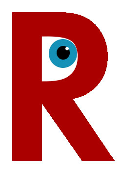
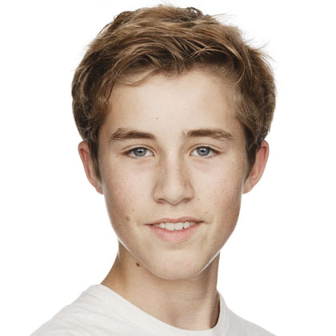

Over ons
De website van KDR Nieuws is nog heel jong, het is opgericht in Maart van 2021. Het kan dus zijn dat u een foutje tegenkomt op de website. Mocht dat het geval zijn, vragen wij u vriendelijk om dit te melden door contact met ons op te nemen.
De website is oorspronkelijk gecreëerd door Kylian de Rooij als eindproject voor het vak 'Web Technologie', wat het tot heden nog steeds is. Het doel van de website is om mensen te voorzien van een zeer toegankelijke nieuws bron. Hierbij was een doelgroep van een gemiddelde volwassene.
Het logo van KDR Nieuws
Het Logo
Bij het ontwerpen van het logo moesten we aan iets creatiefs denken. Daarom dachten wij aan de letter 'R' van de achternaam van de designer. Daarnaast dachten wij eraan om een oog in het midden van het open deel te plaatsen. Dit oog is bedoeld om nieuwsgierigheid aan te duiden. Het is dus bedoeld om aan te geven dat wij altijd streven naar het vinden en versprijden van interessante en relevante nieuws info.
Het Team
Kylian de Rooij, Design and Content Manager
Kylian de Rooij is verantwoordelijk van het designen en maken van de website, daarnaast is het ook zijn taak om alle inhoud voor artikelen te verzamelen. Kylian heeft het grootste deel van zijn skillset te danken aan het geweldige lesgeven van Stijn Eikelboom, de Quality Control Manager.
Stijn Eikelboom, Quality Control Manager
Stijn Eikelboom is verantwoordelijk voor het controleren van de kwaliteit van de website. Hij zal de Design and Content Manager voorzien van feedback op het design van de website, aan de hand daarvan kan Kylian dan zijn design en code verbeteren.